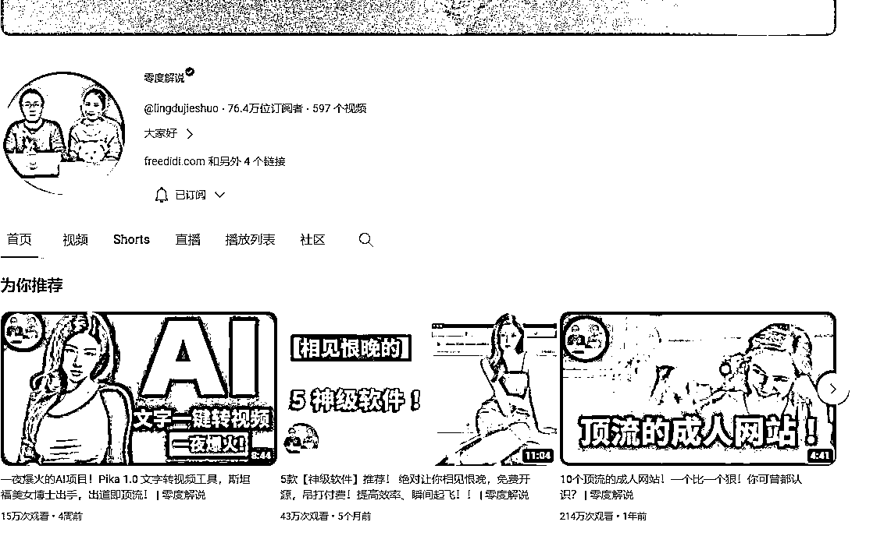
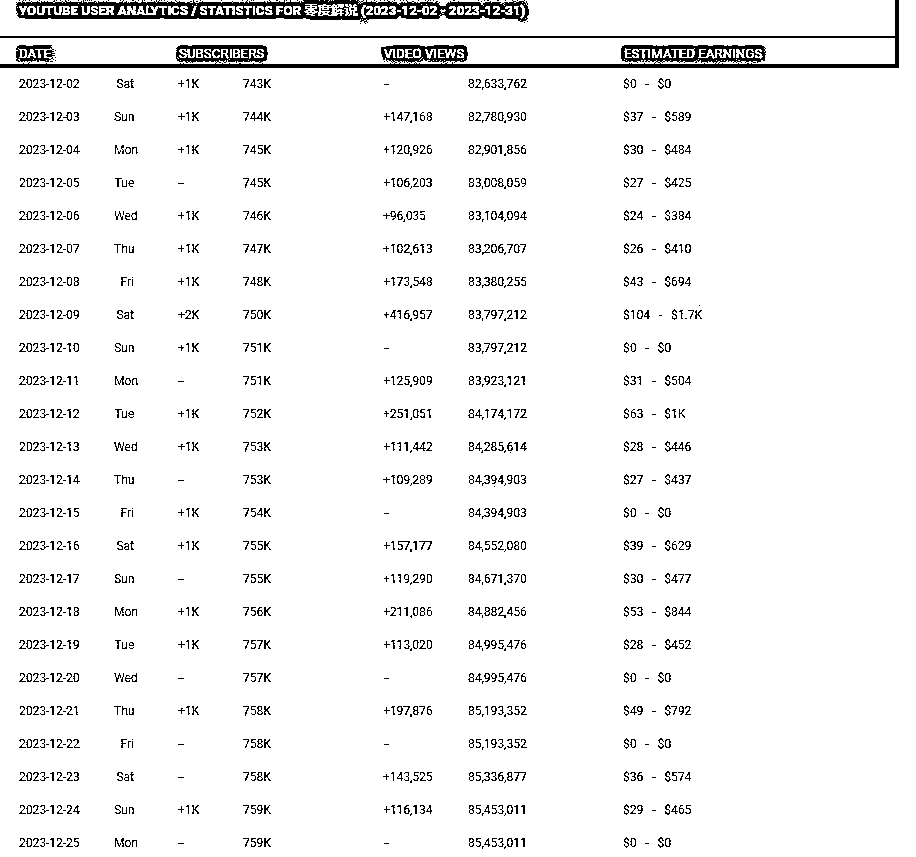
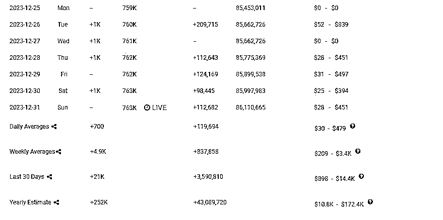
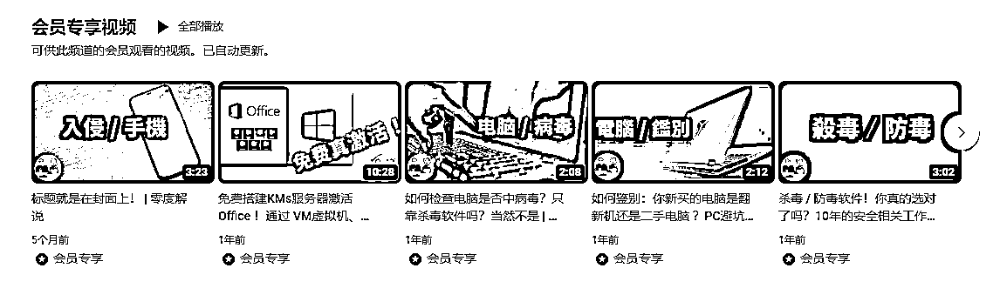
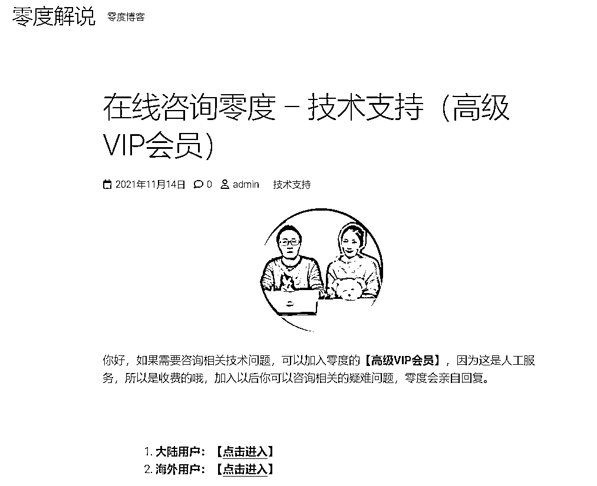
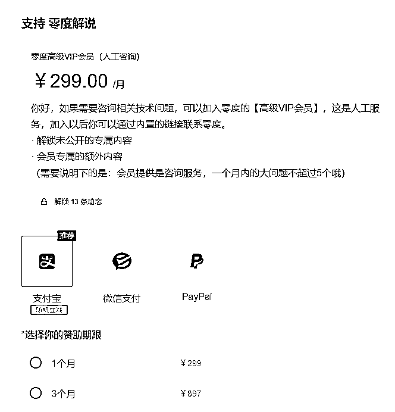

来源：https://ikxlvgnngc.feishu.cn/docx/WxKJdPJRBoVmpqxn60vcACeEnyd
风向标拆解第2期
拆解选题：一个月入10万刀的AI工具做对了什么？
拆解人星球昵称：千知柠
零度解说的基本情况：
该账号是在YouTube平台分享与工具相关的知识和实操方法，中视频每周更新，在facebook、B站都有分享视频。
拆解零度解说的原因：
a.零度解说这个账号发布的中视频最多，流量也大部分是因为中视频，起号比较容易。
b.零度解说的变现方式多样，善于将内容分发到多个平台。
C.该账号发布的每一个视频都可以长期复利，获得持续盈利。
1.免费流量
零度解说的免费流量有中视频、Shorts、直播和社区。

零度解说的主要流量来源于周更的中视频，有少量Shorts（短视频)引导看中视频，而直播和社区主要是和粉丝互动和获取用户的精准需求。
中视频：
a.视频类型都是中视频，视频平均时长在10分钟左右
b.中视频是周更，每周最少更新一个，最多更新3-5个
c.开头有真人出镜，后面讲解和实操时，由真人+操作图片组合
d.每条中视频配有中文字幕，既有简体也有繁体
e.单个中视频的观看次数最少有2.1万次，最多有269万次观看
f.中视频下方的文本框由简介网址（个人博客和其他社交平台的链接）+该视频主题相关网址+日常常用网址（VPN、AI等），零度解说作者会在末尾附上一些推荐的中视频。
Shorts：
a.Shorts中的短视频比较少，有真人出镜
b.短视频全部以长屏为主，有配中文字幕
零度解说近30天有新增21K订阅者，视频观看次数： 3.4777M ，预计收益：869-13.9K美元，即：6191.80-99.04W。而零度解说的粉丝量也有76.4W订阅者。


2.付费流量
YouTube主要有3种推广方式，分别是YouTube SEO 、网红营销和广告投放，YouTube付费推广为200美元，即1430.50元。
零度解说近30天的预计收益：869-13.9K美元，推广成本200美元
按最低算：ROI=4.35%
按最高算：ROI=695%
产品分为有货源模式和无货源模式，零度解说的产品大部分是以收会员为主，产品以线上咨询和收取频道会员为主，没有带货实物产品
零度解说的产品：
a.零度解说这个账号在YouTube平台有一些视频是需要开通会员才能看完的，普通会员29元/月，高级会员299元/月人工咨询），大陆和海外用户都有相应的链接可以购买。
b.零度解说有个人的博客网站，博客网站也可以开通会员。



利润的核心公式：利润=收益-成本
收益：以一个月为计算范围，近30天零度解说的收益有869-13.9K美元，即：6191.8-99..04W。
利润率：2.45%-546.4%
成本：1812.72元
a.收益分析
零度解说的收益6191.80-99.04W。
b.成本分析
科学上网费用47.57元，数据分析工具：Keywords Everywhere按年收费，每年106.65（15美元），画图工具30元，付费推广1430.50元
综合利润：
4379.08-98.85W
针对零度解说所梳理的项目框架：
不断优化视频质量，在YouTube定期发布与工具方法论相关的视频，从平台中获取流量——
建立个人网站，增加多种购买会员的方式——设计产品时，清晰设置引流品和利润品——
每月算账，清楚利润多少——针对高质量的视频，多平台分发（根据平台规则做一些调整）
项目如何做：
1.了解并熟练操作YouTube、TikTok等海外平台
2.明确定位在YouTube寻找对标账号
3.定期每周更新，持续迭代视频内容、视频声音、视频下方引导内容等
4.前期起号时以不要求粉丝数量的变现方式为主
5.定期发布社区和直播话题互动，不断捕捉用户的精准需求
6.中期有了一些粉丝后，再增加视频会员、频道会员等变现方
7.后期在产品上，可以增加在线咨询、一对一远程操作等服务，提升营收
项目如何放大：
a.提升视频的内容质量，针对一条短视频或中视频，多平台分发，除了YouTube可以发布内容之外，也可以发布在Facebook、Bilibili、TikTok等平台，增加覆盖人数。
b.增加在线咨询、远程一对一实操服务，提升营收。